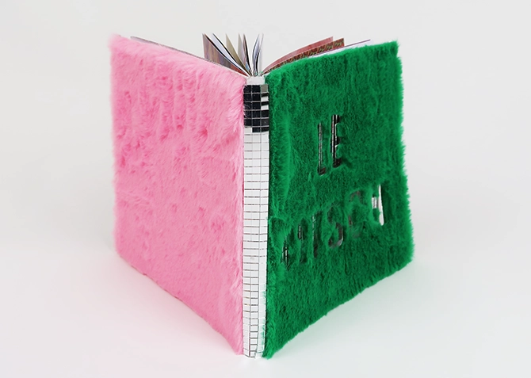
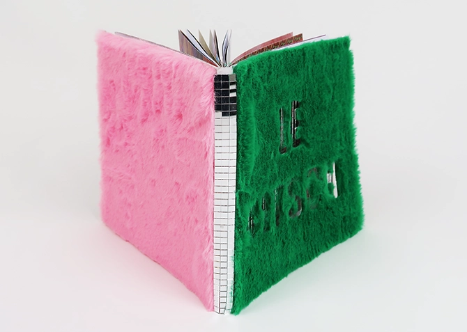

C'est Kitsch !
Le terme "Kitsch" vient du bavarois qui désigne les déchets, les ordures, les oeuvres d'art baclées et de mauvais goûts. Le terme kitsch a été utilisé surtout pour qualifier des objets, des meubles, des motifs qui ont été inspiré de la noblesse. On définit un objet kitsch quand il n'était pas dans un matériaux noble mais plûtot en plastique car c'était aussi une façon de le vendre moins cher et donc d'ouvir le marché aux autres classes sociales. En duo, avec Lise Dufour nous avond décidé de recolter un maximum d'image possible qui montrait le kitsch aujourd'hui. Nous nous sommes surtout concentré sur les motifs et les objets considérés comme kitsch. En dernière partie de l'édition nous avons décidé de créer des compositions pour mettre en relation les éléments trouvés.

 
